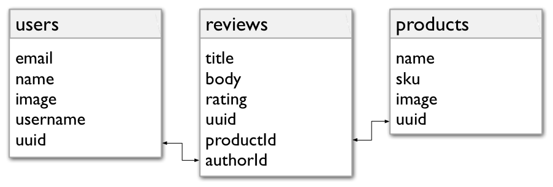
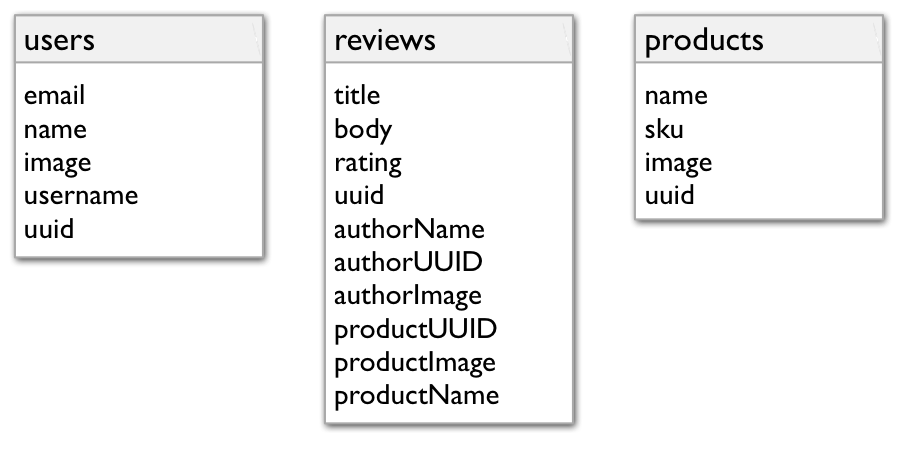

Data Store Best Practices¶
The Usergrid data store is backed by Cassandra, an open source distributed DBMS. Cassandra is specifically designed to support applications that need flexibility and high scalability, particularly web and mobile applications. To get the most out of your Usergrid application, you should optimize your data access with this kind of database in mind.
Put your data in as you’ll want to get it out¶
The best practices described here are all related to the theme of putting your data in the way you’ll want to get it out. You’ll model your data with your likely read requests in mind rather than by modeling around the structure of the data itself (as you might with a relational database). In many cases, you can avoid using queries that are inefficient for this kind of database.
You can use the following techniques to optimize data store access:
- Denormalize and duplicate. By creating a data model that strategically denormalizes and duplicates data, you can avoid costly queries. In other words, you model the data so that all of the data for a given request is all in one place rather than scattered in a way that a query must account for.
- Create direct paths to the data you’ll want. You can optimize your app’s performance by connecting entities your code retrieves most often. With connections, you can avoid some queries that might add complexity and reduce performance.
Best practice: Denormalize for pre-computed query results¶
If you’re familiar with designing relational databases, you’re probably used to normalizing the structure of your data as much as possible. When normalizing an RDBMS data model, you minimize redundancy by ensuring that a column from one table is duplicated only once in any other table, and only when necessary to create primary/secondary key relationships. You then retrieve data that spans tables by joining them with an SQL query.
In contrast, with the Usergrid data store you’ll get better performance by strategically denormalizing and duplicating data. When you denormalize, you combine data from what might (in a relational model) have been separate tables. When duplicating, you intentionally maintain copies of certain entity properties across multiple entities. By denormalizing and duplicating, you can collect the results of requests into a single entity rather than relying on a query.
Part of designing your data model should include identifying the queries your client will make. Then in your data model design, you capture the results of those queries in advance by writing that data into entities of one collection you can read from later.
Getting review data the relational way¶
For example, take a closer look at the relational case through a product database. Imagine you want to present a list of all reviews for a product. When a user chooses a review from the list, you’ll show them a view that includes the review’s title, body, and rating; the product it describes; and who wrote the review. That way, your user will be able to click through to more information about the product or reviewing user.
In a relational database, you’d likely have separate tables for the review-specific information and a rating; for the product; and for the user. Your reviews table would include secondary keys with which to join reviews to the users and products tables. Maybe something like this:
To get the data you need, your query might look like the SQL query below. By getting UUIDs for the user and product into your client code, you’re able to give the user a way to get user and product information from the review.
SELECT review.title, review.body, review.rating, review.uuid,
user.name, user.uuid, product.name, product.uuid
FROM reviews
INNER JOIN users
ON users.uuid = reviews.authorId
INNER JOIN products
ON products.uuid = reviews.productId
WHERE reviews.uuid = <uuid_for_selected_review>
But due to Cassandra’s distributed, high-scale design, a join such as this wouldn’t work. So in the Usergrid, you’d get the data by first storing it all in one place.
Using a denormalized model to store (then retrieve) data¶
In the Usergrid, a more efficient way to get the same result would start by including related user and product data with the review data. This would give you a single place to get all the data you’ll show.
The following shows how that model might look as entities in the Usergrid. (The users and products entities are included here to remind you that they exist, but they aren’t actually used in this denormalization example.)
This use case assumes that your user and product data are already in the data store. In the following API request code, you’re just adding a new review written by a user about a particular product. The JSON body is your new review entity (the JSON here is non-entitized to make it readable).
POST https://api.usergrid.com/my_org/my_app/reviews -d {
"title" : "Tempted to climb in myself.",
"body" : "I mean, who doesn't love a bouncy castle? The kids love it!",
"rating" : 3,
"authorName" : "Jennie",
"authorUUID" : <author_uuid>,
"authorImage" : "http://<path_to_image>.png",
"productUUID" : <product_uuid>,
"productImage" : "http://<path_to_image>.jpg",
"productName" : "Magic Castle Bounce House Inflatable Bouncer"
}
Notice that you’re adding user and product data (which your client code would have at hand when the user posts the review) when you’re adding the review-specific data.
Retrieving all the data from one place You’d get the review, including the subset of product and user data you need right away, by making one API call such as the following (note there’s no SQL-like query string needed):
GET http://api.usergrid.com/my_org/my_app/reviews/<review_uuid>
Your result might look like this. The highlighted lines show data you’d present to the user.
{
"action" : "get",
"application" : "<app_uuid>",
"params" : { },
"path" : "/reviews",
"uri" : "https://api.usergrid.com/my_org/my_app/reviews",
"entities" : [ {
"uuid" : "<review_uuid>",
"type" : "review",
"created" : 1395410364673,
"modified" : 1395410364673,
"authorName" : "Jennie",
"authorImage" : "<path_to_image>.png",
"authorUUID" : "<author_uuid>",
"body" : "I mean, who doesn't love a bouncy castle? The kids love it!",
"metadata" : {
"path" : "/reviews/<review_uuid>"
},
"productImage" : "http://<path_to_image>.jpg",
"productName" : "Magic Castle Bounce House Inflatable Bouncer",
"productUUID" : "<product_uuid>",
"rating" : 3,
"title" : "Tempted to climb in myself."
} ],
"timestamp" : 1395764951934,
"duration" : 16,
"organization" : "my_org",
"applicationName" : "my_app"
}
This gives you, in one request, all the review information you’d planned on presenting to your app’s users for a single view. Your client code could retrieve the review entity in the result, along with the product and user data, then present it all as a review.
Best practice: Connect entities to simplify scoped requests Another way to streamline your requests is to connect entities by using the built-in connections feature. In a sense, a connection can replace the WHERE clause of a query you might have written.
Getting back to the review example, imagine you want to retrieve all of the reviews written by a particular user. In the relational example, you might have an SQL query such as this:
SELECT * FROM reviews WHERE authorId = <user_uuid>;
Even in the Usergrid, you could use a similar syntax in a query string appended to an API path. Working from the review entity model in the preceding example, that might look like this (though yours would likely entitize the spaces):
GET http://api.usergrid.com/my_org/my_app/reviews?ql=select * where
authorUUID=<user_uuid>
But if this is an API call you’re going to be making often, there’s a better way. Instead, create a connection between the review and the user when your code creates the review. You can connect entities with a verb that describes their relationship to one another.
The following creates Jennie’s review and at the same time connects her as the person who “wrote” it. (For easier reading, this example contains spaces you wouldn’t be able to include.)
POST http://api.usergrid.com/my_org/my_app/users/jennie/wrote/reviews {
"title" : "Tempted to climb in myself.",
"body" : "I mean, who doesn't love a bouncy castle? The kids love it!",
"rating" : 3,
"authorName" : "Jennie",
"authorImage" : "http://<path_to_image>.png",
"productName" : "Magic Castle Bounce House Inflatable Bouncer",
"productImage" : "http://<path_to_image>.jpg"
}
When reading the data, you’d retrieve all of the reviews Jennie has written with a URL that’s nearly identical, minus the JSON:
GET http://api.usergrid.com/my_org/my_app/users/jennie/wrote/reviews
Your request result would look something like the following. Here, the entities array returned contains the reviews you connected with Jennie (though there’s only one in this example). The connection-specific metadata is highlighted.
{
"action" : "get",
"application" : "<app_uuid>",
"params" : { },
"path" : "/users/<user_uuid>/wrote",
"uri" : "https://api.usergrid.com/my_org/my_app/users/<user_uuid>/wrote",
"entities" : [ {
"uuid" : "<review_uuid>",
"type" : "review",
"created" : 1395410364673,
"modified" : 1395410364673,
"authorName" : "Jennie",
"authorImage" : "http://<path_to_image>.png",
"authorUUID" : "<user_uuid>",
"body" : "I mean, who doesn't love a bouncy castle? Kids love it!",
"metadata" : {
"connecting" : {
"wrote" : "/users/<user_uuid>/wrote/<review_uuid>/connecting/wrote"
},
"path" : "/users/<user_uuid>/wrote/<review_uuid>",
},
"productImage" : "http://<path_to_image>.jpg",
"productName" : "Magic Castle Bounce House Inflatable Bouncer",
"productUUID" : "<product_uuid>",
"rating" : 3,
"title" : "Tempted to climb in myself."
} ],
"timestamp" : 1395777037697,
"duration" : 19,
"organization" : "my_org",
"applicationName" : "my_app"
}
To retrieve a particular review written by Jennie, you could use something like the following:
GET http://api.usergrid.com/my_org/my_app/users/jennie/wrote/reviews/<review_uuid>
You can create connections to set up relationships you can use to later retrieve data quickly and with a simple syntax.
For example, when creating a connected entity (such as the review entity here), you can at the same time create other connections to connect the product to the new review, then connect the product to its reviewer (paths are abbreviated in these examples):
POST /users/jennie/wrote/reviews {<review_entity_json>}
POST /products/<reviewed_product_uuid>/reviewedIn/reviews/<new_review_uuid>
POST /products/<reviewed_product_uuid>/reviewedBy/users/jennie
Having created these connections for each review you post, in addition to getting the review the user wrote, you could later also:
Get the reviews for a product:
GET /products/<reviewed_product_uuid>/reviewedIn/reviews
Get the users who reviewed the product:
GET /products/<reviewed_product_uuid>/reviewedBy/users